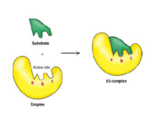

前言
正则表达式的教程在网上易得，而单开这么一篇，更多是为了督促自己不要轻易遗忘，也提供一个易于快速复习的地方。正则表达式就好像一种模板，只有与模板完全相符合的字符串才能被匹配。即便在初学时，也使用得到——比方说：检测程序设计课作业的输出是否正确？

char *strchr(const char *str, int c)
char *strrchr(const char *str, int c)
char *strstr(const char *haystack, const char *needle)
在学习C语言的时候，我们都曾经用过如上几个字符/字符串查找的函数，正则表达式也有类似的效果，不过它在应用范围上更为广阔。尽管看起来好似鬼画符，阅读起来也颇有难度，但一用便觉出它的方便了。举一个例子：
import re
"简单写一个可以匹配实数（支持科学计数法）的正则"
numPattern = "^[+-]?\d+(\.?\d*([Ee]{1}[+-]?\d+)?)?$"
with open("in.txt", "r") as file1:
while (1):
line = file1.readline()
if (line):
num = re.search(numPattern, line)
if (num): print(num)
else:
break
#样例
12345
-88.1759
abcd5e5
-9.128E-100
#输出
<re.Match object; span=(0, 5), match='12345'>
<re.Match object; span=(0, 8), match='-88.1759'>
<re.Match object; span=(0, 11), match='-9.128E-100'>
Process finished with exit code 0
真香。
附一个在线测试网站：正则表达式在线测试
正则表达式语法
简单介绍常用功能。
注：正则表达式中/代表一种“额外匹配规则的”标记，而\类似于转义符。
定位符
^：匹配起始位置：例如^apple可匹配”apple everyday”，不能匹配“an apple”$：匹配结束位置：例如apple$不能匹配”apple everyday”，可匹配“an apple”\b：匹配单词边界，例如\bapple不能匹配”pineapple”\B：匹配非单词边界，例如\Bapple能匹配”pineapple”
字符
注：连字符-在方括号中的使用按照Unicode排序。
[abc]：匹配方括号中所有字符[^abc]：匹配“除了方括号中字符”的所有字符[a-z]：匹配所有小写字母 (允许[a-c])[A-Z]：匹配所有小写字母[0-9]：匹配所有数字 (允许[0-5]).：匹配除换行符(\n, \r)之外的任何单个字符，等价于[^\n\r]\s：匹配所有空白符，等价于[\f\n\r\t\v](\S等价于[^\f\n\r\t\v])\w：匹配字母、数字、下划线。等价于[A-Za-z0-9_](\W等价于[^A-Za-z0-9_])\d：匹配数字，等价于[0-9](\D等价于[^0-9])
限定符
贪婪
?：匹配它前面的字符0次或1次，等价于{0,1}。如”aaaaabc”正则a?，得到”a”*：匹配它前面的字符0次或多次，等价于{0,}。如”aaaaabc”正则a?，得到”aaaaa”+：匹配它前面的字符1次或多次，等价于{1,}。如”aaaaabc”正则a?，得到”aaaaa”{n}：n 是一个非负整数，匹配确定的 n 次{n,}：n 是一个非负整数，匹配至少 n 次{n,m}：m 和 n 均为非负整数(n<=m)。匹配至少 n 次、至多 m 次
懒惰
??：匹配它前面的字符0次或1次，但尽可能少。如”aaaaabc”正则a?，得到空*?：匹配它前面的字符0次或多次，但尽可能少。如”aaaaabc”正则a?，得到空+?：匹配它前面的字符1次或多次，但尽可能少。如”aaaaabc”正则a?，得到”a”{n,}?：n 是一个非负整数，匹配至少 n 次，但尽可能少{n,m}?：m 和 n 均为非负整数(n<=m)。匹配至少 n 次、至多 m 次，但尽可能少
选择
()：标记一个子表达式的开始和结束位置，表示捕获分组，() 会把每个子匹配里的值存储到一个临时缓冲区中，按照在正则表达式模式中从左到右出现的顺序。
- 可以使用 \n(向后引用) 访问，其中 n 为一个标识特定缓冲区的一位或两位十进制数。
- 可以使用非捕获元字符 ?:、?= 或 ?! 来重写捕获，忽略对相关匹配的保存。
(exp)匹配exp，并捕获文本到自动命名的组里(?<name>exp)：匹配exp，并捕获文本到名称为name的组里(?:exp)：匹配exp，不捕获匹配的文本，也不给此分组分配组号exp1(?=exp2)：查找 exp2 前面的 exp1exp1(?!exp2)：查找后面不是 exp2 的 exp1(?<=exp2)exp1：查找 exp2 后面的 exp1(?<!exp2)exp1：查找前面不是 exp2 的 exp1|：指明两项之间的一个选择
例如：/\b([a-z]+) \1\b可匹配重复单词，如”I am happy happy”，其中\b代表单词边界，()为一个子匹配项，\1为第一个子匹配项。
修饰符
位于正则表达式外，代表一种“额外匹配规则的”标记。
/pattern/flags #例如/[a-z]+/igm, igm为修饰符
- i：ignore - 不区分大小写
- g： global - 全局匹配，即查找所有的匹配项
- m：multi line - 多行匹配，即使边界字符 ^ 和 $ 匹配每一行的开头和结尾，记住是多行，而不是整个字符串的开头和结尾
- s：特殊字符圆点 . 中包含换行符 \n
运算符优先级
| 运算符 | 描述 |
|---|---|
| \ | 转义符 |
| (), (?:), (?=), [] | 圆括号和方括号 |
| *, +, ?, {n}, {n,}, {n,m} | 限定符 |
| ^, $, \任何元字符、任何字符 | 位置和顺序 |
| | | 或 |